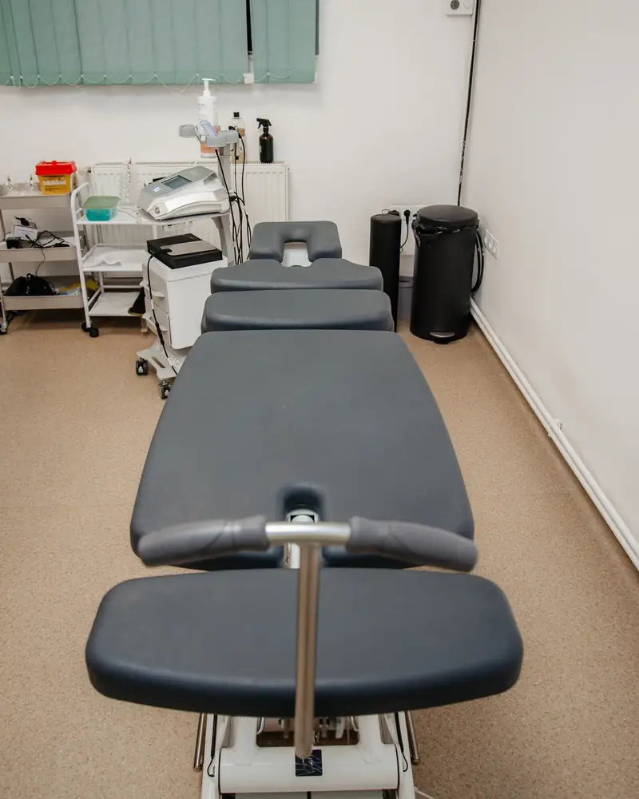
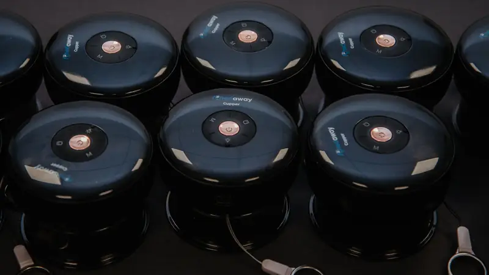

Clinică de recuperare în centrul orașului Satu Mare
Mișcare fără durere, în ritmul tău.
O clinică mică, cu doi kinetoterapeuți care îți explică fiecare procedură înainte s-o facă. Lucrăm cu dureri de spate și de gât, recuperare după operații și sportivi.
- Erik și Brian, kinetoterapeuți
- Luni–vineri, 12:00–20:00, cu programare
- 5,0 din 17 recenzii Google


Bun venit la KineticFit
La noi, fiecare ședință începe cu o întrebare simplă: cum te-ai simțit de data trecută? Abia apoi alegem ce facem azi, terapie manuală, aparatură sau exerciții.
Îți spunem dinainte ce urmează și ce o să simți, ca să nu ai surprize pe masa de tratament. Iar exercițiile pe care le primești pentru acasă contează la fel de mult ca ședința.
- Kinetoterapie, fizioterapie și terapie manuală
- Cursuri de specializare, cu certificat de participare
- Aparatură Winback și Chattanooga, mese Manuthera și Lojer
Ce facem împreună
Fiecare tratament pornește de la o evaluare. Abia apoi alegem tehnicile și ritmul ședințelor.
Kinetoterapie
Dureri de spate și de gât, hernie de disc, recuperare după fracturi și operații.
Ședințe unu la unuTerapie Tecar și fizioterapie
Căldură în profunzime și curenți care scad durerea și inflamația.
Aparatură Winback și ChattanoogaChiropractică
Ajustări ale coloanei, cu mâinile sau cu instrumentul ArthroStim.
Pe masă de chiropractică LojerMasaj terapeutic și sportiv
Pentru contracturi, tensiune și recuperare după antrenament, cu ventuze la nevoie.
Singur sau înaintea unei ședințeReeducare posturală
Stretching global activ și exerciții pentru umeri aduși, cifoză și scolioză.
Pentru adolescenți și adulțiDry needling și IASTM
Ace fine pentru punctele trigger și instrumente pentru fascie, când mușchiul nu cedează altfel.
Ace sterile, de unică folosință
Tehnicile, pe scurt
Pe vitrina clinicii scrie Tecar, IASTM, ArthroStim. Iată ce înseamnă fiecare și ce simți în timpul lor.

Terapie Tecar
Un curent de radiofrecvență încălzește țesutul din interior. Scade durerea și pregătește mușchiul pentru exerciții. Simți doar căldură.
Dry needling
Ace foarte fine în punctele trigger, nodurile dureroase din mușchi. Simți o înțepătură scurtă și o zvâcnire, apoi mușchiul se relaxează.
IASTM
Instrumente din oțel cu care lucrăm pe fascie, învelișul mușchilor, și pe țesutul cicatricial de după operații.
ArthroStim
Un instrument care dă impulsuri scurte și precise pe o vertebră anume. O ajustare fără răsuciri bruște.
Ventuze
Ventuzele trag pielea și fascia în sus și eliberează tensiunea. Urmele rotunde dispar în câteva zile.
Elongații vertebrale
Tracțiune blândă a coloanei, cervicală sau lombară, pe masa de elongații. Ajută la hernie de disc și discopatii.
Nu știi ce ți se potrivește? Asta stabilim împreună la evaluare.
Cum arată prima ședință
Fără grabă și fără termeni pe care nu-i înțelegi. Pleci acasă știind ce ai de făcut.
Ne cunoaștem
Ne povestești ce te doare și de când. Ne uităm la investigații, la postură și la felul în care te miști.
Lucrăm împreună
Începem tratamentul chiar de la prima vizită. Îți spunem dinainte ce facem și ce o să simți.
Continui acasă
Primești exercițiile pentru acasă și stabilim împreună câte ședințe mai urmează.
Tarife și pachete
Prețurile sunt orientative. Plătești cu cardul sau contactless.
Recuperare
Kinetoterapie și tratament, unu la unu.
- Consult și evaluarecu plan de tratament
- 100 lei
- Ședință de kinetoterapie
- 120 lei
- Pachet 10 ședințe
- 1.000 lei
- Elongații vertebralecervical sau lombar
- 60 lei
Terapii și masaj
Separat sau în aceeași ședință.
- Terapie Tecaro zonă
- 100 lei
- Chiropracticămanual sau cu ArthroStim
- 150 lei
- Dry needlingo zonă
- 100 lei
- Masaj terapeutic sau sportiv50 de minute
- 150 lei
Voucher cadou
Oferă cuiva drag un masaj sau un pachet de ședințe. Îl primești pe e-mail sau tipărit, în plic.

Trei exerciții pentru pauza de la birou
Le poți face pe scaun, fără echipament. Dacă te doare în timpul lor, oprește-te și scrie-ne.
Bărbia spre piept 10 repetări
Stai drept și trage ușor bărbia înapoi, ca și cum ai face o bărbie dublă. Ține 3 secunde și relaxează.
Rotații de umeri 10 în fiecare sens
Ridică umerii spre urechi, du-i înapoi și coboară-i. Mișcarea e lentă și cât mai largă.
Răsucire pe scaun 3 pe fiecare parte
Cu tălpile pe podea, răsucește trunchiul spre dreapta, ține 3 respirații, apoi spre stânga.
Exercițiile sunt generale și nu înlocuiesc o evaluare.
Ce spun pacienții
5,0 din 5, din 17 recenzii pe Google.
Kinetoterapeutul a explicat cu răbdare fiecare procedură, m-a anunțat din timp ce urmează și mi-a descris exact ce voi simți, ceea ce mi-a oferit siguranță și încredere.
Am mers cu dureri groaznice în zona lombară iar după câteva ședințe nu îmi venea să cred că efectiv nu mă mai durea nimic.
Recomand, cei mai profesioniști, amabili și cu aparatură de ultimă generație!
Întrebări frecvente
Am nevoie de programare?
Da, lucrăm doar cu programare, de luni până vineri între 12:00 și 20:00. Sună la 0757 580 831 sau scrie-ne.
Am nevoie de trimitere de la medic?
Nu. Dacă ai investigații sau un diagnostic, adu-le la prima ședință. Dacă evaluarea arată că ai nevoie de un medic, îți spunem și te îndrumăm.
Pot veni dacă am hernie de disc?
Da, e una dintre problemele cu care vin cel mai des pacienții la noi. Lucrăm cu elongații, terapie manuală și exerciții, după o evaluare.
Ce diferență e între masajul terapeutic și cel sportiv?
Masajul terapeutic urmărește o problemă anume, de exemplu o contractură la gât sau la spate. Masajul sportiv pregătește sau descarcă mușchii înainte și după efort. Pe amândouă le putem combina cu ventuze.
Ce să port?
Haine comode, în care te poți mișca. Pentru gât și spate e mai simplu un tricou larg, iar pentru genunchi o pereche de pantaloni scurți.
Ce se întâmplă dacă nu pot ajunge?
Anunță-ne cât mai devreme, la 0757 580 831, și mutăm ședința într-o zi care îți convine.
Hai să începem
Sună-ne, scrie-ne pe WhatsApp sau completează formularul. Lucrăm doar cu programare.
0757 580 831- Scrie-ne pe WhatsApp
- clinicakineticfit@gmail.com
- Facebook și Instagram: clinicakineticfit
- Bulevardul Vasile Lucaciu 16, Satu Mare
În centru, cu sigla KineticFit pe vitrină
| Luni–vineri | 12:00–20:00 |
|---|---|
| Sâmbătă și duminică | Închis |